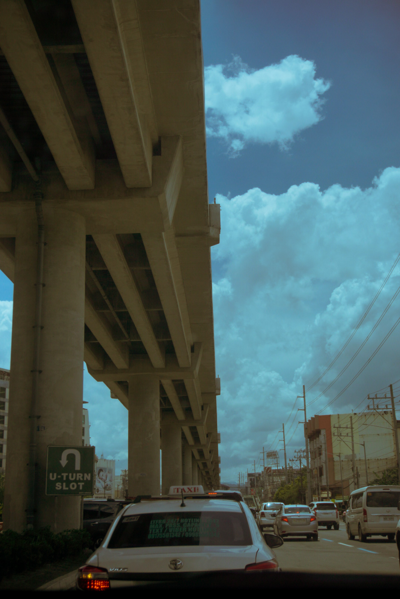
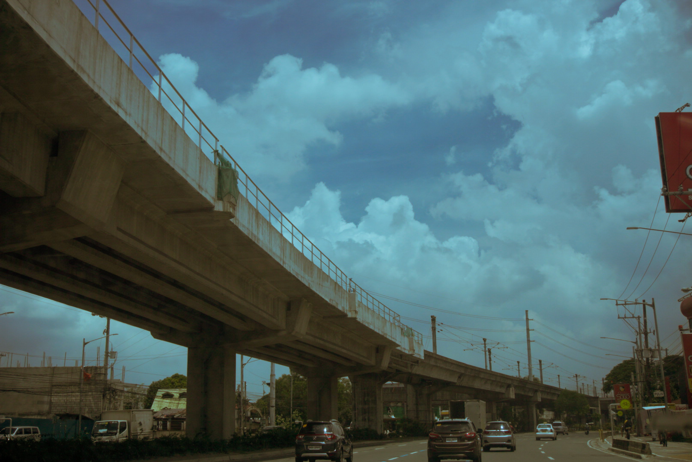

~ outside ~

I realize now that there are a lot of things i took for granted before.
random talks with friends in between classes
the campus at 7 am as i sleepily rush to my 7 am classes
commuting with friends to places
the long lines to buy food at our favorite kiosk

All the little things that annoyed you so much
will be the things you miss most when they're gone